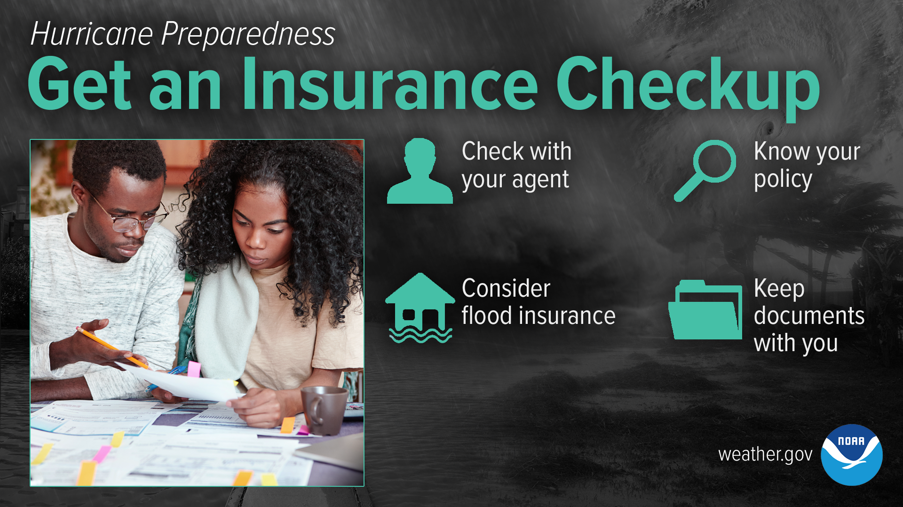
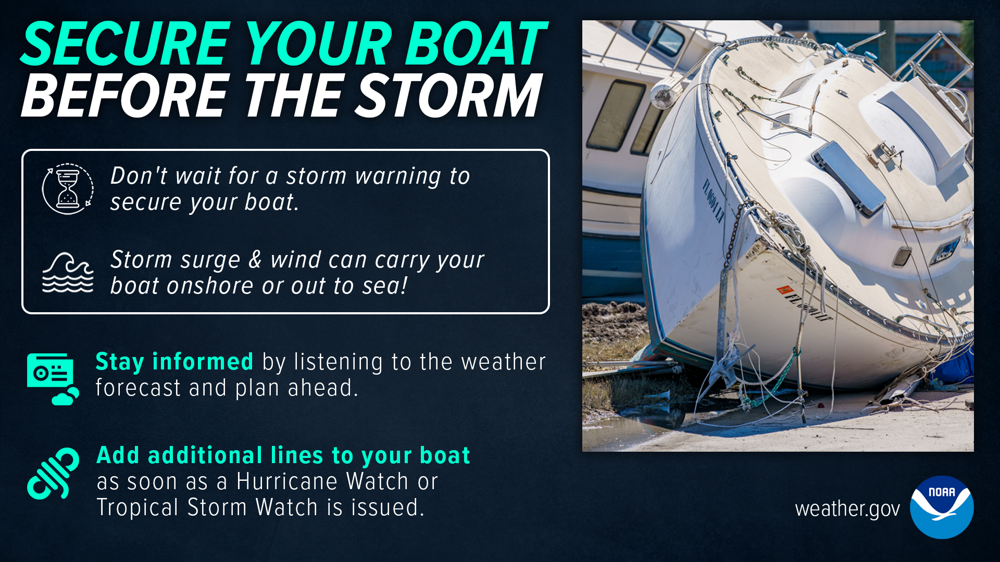
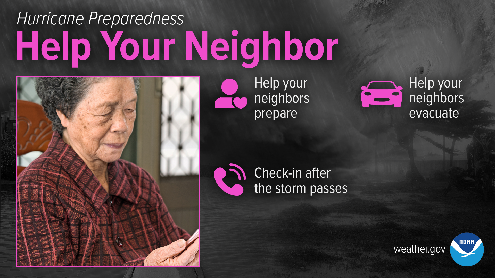
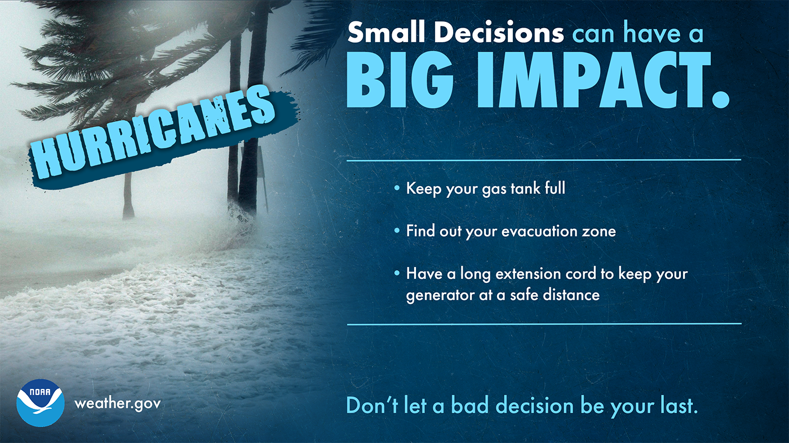

Install shutters or plywood on all windows and doors
Reinforce your garage door — it's often the weakest point
Bring inside or tie down all outdoor furniture, decorations, and trash cans
Trim trees and remove dead branches that could become projectiles
Clear gutters and drains to prevent flooding from blocked water flow
Know how to turn off utilities (gas, water, electricity) at the main switches
Charge all devices and power banks before the storm arrives
Insurance Checkup
Review your homeowner's or renter's insurance policy now, not after
Consider flood insurance — standard policies often exclude flood damage
Keep copies of all insurance documents in a waterproof bag in your go bag
Take a video walkthrough of your home and belongings — store it in the cloud or email it to yourself
Know your insurer's claims hotline number by heart

Get an insurance checkup before hurricane season — NOAA
Secure Your Boat
Move your vessel to a safe harbour or inland marina before the storm
Use extra dock lines — at least three times the normal amount
Remove canvas, covers, and anything that creates wind resistance
If hauling the boat, place it well inland on a sturdy cradle
Photograph the boat and document its current condition for insurance

Secure your boat well before the storm arrives — NOAA

Help your neighbours — especially the elderly — prepare before the storm — NOAA

Small decisions before the storm can make a life-saving difference — NOAA
Practice Your Plan
Conduct drills with all household members. Make sure everyone knows the shelter room location, where emergency supplies are kept, and all emergency exits.